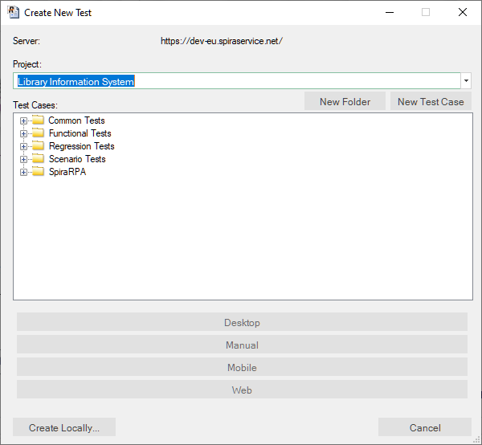
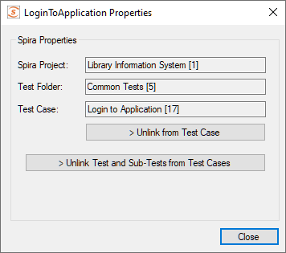
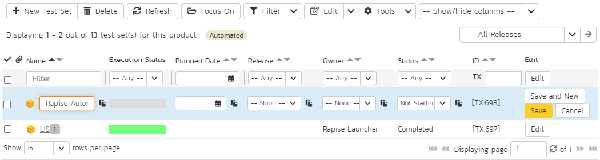
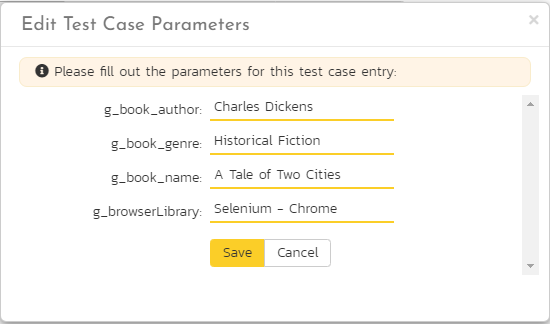

SpiraTest Integration
Overview
SpiraTest is a web-based quality assurance and test management system with integrated release scheduling and defect tracking. SpiraTest includes the ability to execute manual tests, record the results and log any associated defects.
When you use SpiraTest with Rapise you get the ability to store your Rapise automated tests inside the central SpiraTest repository with full version control and test scheduling capabilities:

You can record and create your test cases using Rapise, upload them to SpiraTest and then schedule the tests to be executed on multiple remote computers to execute the tests immediately or according to a predefined schedule. The results are then reported back to SpiraTest where they are archived as part of the project. Also the test results can be used to update requirements' test coverage and other key metrics in real-time.
In addition, you can also create exploratory manual tests, save them to SpiraTest and then execute them from within Rapise. This gives you access to more powerful screen capture and annotation functionality than is possible solely using SpiraTest.
Note: SpiraTeam is an integrated ALM Suite that includes SpiraTest as part of its functionality, so wherever you see references to SpiraTest in this section, it applies equally to SpiraTeam.
Configuring SpiraTest
Before you can use SpiraTest to manage your Rapise automated tests you need to perform some initial configuration. This section assumes that you already have a working installation of SpiraTest or SpiraTeam v4.2 or later. If not, please refer to the SpiraTest Installation and Administration Guide for details on how to install SpiraTest.
Configuring the Rapise Automation Engine
Log in to SpiraTest as a system administrator and go into SpiraTest main Administration page and click on the Test Automation link under Integration.
Note: Depending on when you first installed SpiraTest, you may already have an entry for Rapise, since versions 3.2 and later of SpiraTest automatically ship with a default entry for Rapise.
Click the Add button to enter the new test automation engine details page. The fields required are as follows:

- Name: This is the short display name of the automation engine. It can be anything that is meaningful to your users.
- Description: This is the long description of the automation engine. It can be anything that is meaningful to your users. (Optional)
- Active: If checked, the engine is active and able to be used for any project.
- Token: This needs to be the assigned unique token for the automation engine and is used to tell SpiraTest which engine to actually use for a given test case. For Rapise this should always be set to Rapise.
Once you have finished, click the Insert & Close button and you will be taken back to the Automation Engine list page, with Rapise listed as an available automation engine:

Connecting to SpiraTest
The first thing you need to do is to configure the connection to SpiraTest. Click Settings > SpiraTest menu:

This brings up the dialog box that lets you configure the connection to SpiraTest:

Enter the URL, login and password that you use to connect to SpiraTest and then click the Test button to verify that the connection information is correct.
-
The "Default Repository Path" is a folder that used to store local copies of the non-absolute repositories.
-
The Token is the identifier of the current machine that Rapise is installed on. It needs to match the 'Token' name of the corresponding 'Automation Host' in SpiraTest.
You need to be running SpiraTest / SpiraTeam v4.0 or later to use the integration with Rapise.
Creating a Rapise Test From a SpiraTest Test Case
To create a new Rapise test based on the manual test steps already defined in a SpiraTest test case, go to File > New Test. This will bring up the following dialog box:

-
Select the project that has our new test case. The list of test case folders will be displayed.
-
You can create a new folder by clicking the
New Folderbutton -
Expand the folders until you can see the desired test case:

Now either create a new test case by using the New Test Case button or simply click on a test case that you previously created in Spira. In either case you will see its test steps displayed underneath (if there are any):

Once you are satisfied that this is the correct test case, choose the desired methodology (Basic, Manual-only, Mobile or Web), choose browser profile if it is a Web test and choose scripting mode (RVL or JavaScript). Rapise will now create a local test folder and files based on this Spira test case.
If you used an existing SpiraTest manual test case then most likely it already has test steps defined.
Otherwise, if you created a new test case, there will be no manual test steps and no automated script. In which case we need to first add the manual test steps to the test case.
Saving a Test to SpiraTest
If a Rapise test is not linked to SpiraTest test case yet you can do it during Save to Spira process. To save a Rapise test into SpiraTest you need to make sure that the following has been setup first:
- You have a project created in SpiraTest to store the Rapise tests in. The Rapise tests will be stored in a repository located inside the Planning > Documents section of the project.
- The user you will be connecting to SpiraTest with has the permissions to create new document folders.
- You have created the Test Case in SpiraTest that the Rapise test will be associated with. This is important because without being associated to a SpiraTest Test Case, you will not be able to schedule and execute the tests using SpiraTest and RapiseLauncher.
- You have created an AutomationEngine in SpiraTest that has the token name "Rapise". This will be used to identify Rapise automation scripts inside SpiraTest.
Once you have setup SpiraTest accordingly, click File > Save to Spira.
That will bring up the Save to SpiraTest dialog box:

The first thing you will need to do is choose the SpiraTest project from the dropdown list. This will then update the list of test case folders displayed in the top pane of the dialog box.
Once you have chosen the desired project, you need to expand the test case folders in SpiraTest and choose the existing Test Case that you want to attach the Rapise test to:

When you expand the folders to display the list of contained test cases, it will display the name and ID of the test case together with an icon that indicates the type of test case:
 - Manual test case that has no automation script attached. (Repository Path will also be blank)
- Manual test case that has no automation script attached. (Repository Path will also be blank) - Test case that has an existing Rapise test attached.
- Test case that has an existing Rapise test attached. - Test case that has a non-Rapise automation script attached.
- Test case that has a non-Rapise automation script attached.
If you are adding a new Rapise test, choose a test case that has icon (1) and doesn't have an associated Repository path. If you are updating an existing test, choose a test case that has icon (2) and the matching Repository path.
Note: test cases with icon type (3) cannot be used with Rapise for adding or updating scripts.
Once you have chosen the appropriate test case, click the Save/Synchronize button. That will bring up the Create New Repository in Spira dialog box:

This dialog box will let you know where the Rapise script will be stored in SpiraTest and also the location of the repository local directory used to store the 'working copy' of the Rapise test. Click Create to confirm.
A dialog box will be displayed that lists all the files in the local working directory and shows which ones will be checked-in to SpiraTest. The system will filter out result and report files that shouldn't be uploaded. You can change which files are filtered out and also selectively include/exclude files. Once you are happy with the list of files being checked-in, click the [OK] button:
The system will display the message that it's saving the files to the server:

If an error occurs during the save, a message box will be displayed, otherwise the dialog box will simply close.
Opening a Test from SpiraTest
To open a Rapise test from SpiraTest you need to make sure that the following has been setup first:
- You have already configured the connection to the SpiraTest service (see the instructions at the top of this page).
- The user you will be connecting to SpiraTest with has the permission to view the project that the tests are being stored in.
Once you have setup SpiraTest accordingly, click on the File > Open Test from Spira menu.
That will bring up the Open Test from SpiraTest dialog box:

The first thing you will need to do is choose the SpiraTest project from the dropdown list. Once you have done that, the system will display the list of test case folders in this project.
Once you have chosen the project, you need to expand the test case folders in SpiraTest and choose the existing Test Case that you want to open:

When you expand the folders to display the list of contained test cases, it will display the name of the associated Rapise test script associated with it (to the right). Choose a test case that has the matching Rapise test case listed to the right of it (in the Repository Path column).
Note: Only test cases that have an attached Rapise test script will be displayed in this view.
Once you have chosen the appropriate test case, click the [Load/Synchronize] button to load the test case:

A dialog box will be displayed that lists all the files on the server which will be downloaded from SpiraTest. You can change which files are to be downloaded. Once you are happy with the list of files being checked-out, click the [OK] button:
The system will display the message that it's downloading the files from the server. If an error occurs during the download, a message box will be displayed, otherwise the dialog box will simply close.
Synchronizing
Note: When you have a Rapise test previously loaded from SpiraTest or saved to SpiraTest then the standard
OpenandSavebuttons should not be used. Suppose for example, you have some files modified locally and want to update them in the SpiraTest repository. When you click on the Save/Synchronize button, Rapise will show you which files have been modified locally and which have been modified in the central repository. The synchronization dialog either allows you to upload/download the revisions or keep intact the locally modified files depending on your choice.
Viewing the SpiraTest Properties of a Test
To see which SpiraTest project and test case the current Rapise test is associated with, chose Test > Spira Properties menu item. This will bring up the Spira Properties dialog box:

This will display the name of the current Rapise test together with the name of the SpiraTest project, test folder and test case that this test is associated with.
If you would to save the current Rapise test into a new SpiraTest project or if you want to save it against a new test case in the same project, you must first unlink the test. To do this click on the Unlink from Test Case button. This will tell Rapise to remove the stored SpiraTest information from the .sstest file so that it can be associated with a new project and/or test case in SpiraTest.
Warning: This operation cannot be undone so please make sure you really want to unlink the current test.
Using the Spira Dashboard
In addition to using the menu options described in this page, you can interact with SpiraTest using the Spira Dashboard that is available from the View > Spira Dashboard menu. This provides a convenient way of interacting with SpiraTest, allowing you to quickly create, save and open test cases from SpiraTest.
Viewing the SpiraTest Repository
If you open up the project in SpiraTest and click on the Planning > Documents link, you will be taken to the central document repository that now includes your new Rapise test folders:

To see the different revisions of a file, simply click on the hyperlink for a repository item and a preview of the file is displayed:

If you click on the Versions tab, the list of previous revisions will be displayed:

If you click on the Testing > Test Cases tab and then click on the test case that was previously created, you will see that it has its Automation information populated:

This shows you that the Create New Book -- Automated test case is linked to the corresponding Rapise test stored in the SpiraTest document repository (in the "Create New Book Automated" folder). You can click on the Create New Book - Automated.sstest hyperlink and it will automatically take you to the corresponding .sstest file in the SpiraTest document repository:
Using Parameterized Test Cases
Often you will have an automated test script that you want to run several times using:
- Different browsers (e.g. Firefox, Chrome and Internet Explorer)
- Different test data
You can define the various test parameters for both these cases and have SpiraTest pass the values through to the Rapise automated test. For example, in the Automation (or Test Steps) section of the new test case, click the Edit Parameters link and enter the following information:
We have defined four input parameters for this test case:
- g_book_author -- This contains the name of the author for the new book being created
- g_book_genre -- This contains the name of the genre for the new book being created
- g_book_name -- This contains the title/name of the new book being created
- g_browser_library -- This contains the name of the browser we should use to run the test
Now for these parameters to actually affect the Rapise test, you need to make sure that the Rapise test is expecting these variables and knows how to handle them. Conventionally in Rapise, all global variables are prefixed with g_ which is why we have similarly named the SpiraTest parameter names. In the sample Library Information System tests that come with SpiraTest, we have the following code:
function TestInit()
{
//Input variables - allows SpiraTest to configure as parameters
//Provide backup values if not defined
if ('undefined' == typeof(g_book_name))
{
g_book_name = 'The Restaurant at the end of the Universe';
}
if ('undefined' == typeof(g_book_author))
{
g_book_author = 'Agatha Christie';
}
if ('undefined' == typeof(g_book_genre))
{
g_book_genre = 'Science Fiction';
}
if ('undefined' == typeof(g_browser_library))
{
g_browser_library = "Internet Explorer HTML";
}
Tester.SetReportAttribute("Browser", g_browser_library);
KillBrowser();
}
This code will check to see if the variables are provided by SpiraTest and if not, it will use some defaults. This is useful when you want to be able to run the test directly from Rapise and from SpiraTest without having to make changes to the test script.
Note, that if your test is implemented in RVL, you may define these variables right in RVL sheet using Global Variables. So same definition would look like:

These global variables (g_book_name, g_book_author, g_book_genre) can now be used in the Rapise test script at the appropriate points in the playback.
The g_browser_library variable is used to specify which browser should run the test. This is done with the following command, located in the CreateNewBook.js file:
g_load_libraries=["%g_browser_library:Internet Explorer HTML%"];
This tells Rapise to use either the g_browser_library variable (if defined) or fallback to using Internet Explorer if not.
Note: Parameters in Rapise and SpiraTest are case-sensitive, so make sure that your parameter names in SpiraTest match those in Rapise exactly, including the specific case.
Scheduling the Tests
Now that we have our Rapise automated test uploaded to SpiraTest and associated with a test case, we can now schedule the test to be executed. The first thing we need to do is setup the list of automation hosts.
Configuring the Automation Hosts
When you execute Rapise automated tests from SpiraTest, you have the ability to specify which computer(s) it will be executed on. We call those different computers, the automated hosts. Each automation host needs to have a copy of Rapise installed on it.
Go to Testing > Automation Hosts in SpiraTest to display the list of automation hosts:
Make sure that you have created an Automation Host for each computer that is going to run an automated test case. The name and description can be set to anything you like, but the Token field must be set to a unique name for each computer.
Once you have at least one Automation Host configured, we need to next create the test sets that will be scheduled to execute on these hosts.
Creating and Scheduling the Test Sets
Inside SpiraTest, click on Testing > Test Sets to display the list of existing test sets:

Now click on New Test Set to create a new test set that will contain our automated test case:

Note: Unlike manual test cases, automated test cases must be executed within a test set -- they cannot be executed directly from the test case.
Now click on the hyperlink of our new test set to display the test set details page:

Scroll down to the Test Cases section:

First, click on the Add Tests hyperlink in the Test Cases tab to bring up the dialog box that lets us add new test cases to the set:

Choose our Rapise automated test case and click the Add button. The test case will now be added to the set. Perform the same action again so that we have the separate instances of our Rapise test case:
Since in this example we have parameterized test cases inside the automated test set, we need to set their values by right-clicking on each test case in turn and choose Edit Parameters:

Enter the parameter values and click Save to commit the change. This allows you to have the same test case in the test set multiple times with different data for each instance of the test case.

Now that we have the test case added to the set, we need schedule the test set for execution by filling in the following fields:
- Automation Host -- This needs to be set to the name of the automation host that will be running the automated test set.
- Planned Date -- The date and time that you want the scenario to begin. Note that multiple test sets scheduled at the exact same time will be scheduled by Test Set ID order.
- Status -- This needs to be set to Not Started for RapiseLauncher to pick up the scheduled test set. When you change the Planned Date, the status automatically switches back to Not Started.
- Type -- This needs to be set to Automated for automated testing.
Executing the Test Sets
Once you have set the various test set fields (as described above), the RapiseLauncher instance running on the assigned automation host will periodically poll SpiraTest for new test sets. Once it retrieves the new test set, it will add it to its list of test sets to be execute. Once execution begins it will change the status of the test set to In Progress, and once test execution is done, the status of the test set will change to either"Completed -- the automation engine could be launched and the test has completed -- or Blocked -- RapiseLauncher was not able to execute the automation test.
If you want to immediately execute the test case on your local computer, instead of setting the Automation Host, Status and Planned Date fields, you can instead click the Execute icon on the test set itself. This will cause RapiseLauncher on the local computer to immediately start executing the current test set.
In either case, once all the test cases in the test set have been completed, the status of the test set will switch to Completed and the individual test cases in the set will display a status based on the results of the Rapise test:
- Passed -- The Rapise automated test ran successfully and all the test conditions in the test script passed.
- Failed -- The Rapise automated test ran successfully, but at least one test condition in the test script failed.
- Blocked -- The Rapise automated test did not run successfully.
If you receive the Blocked status for either the test set or the test cases you should open up the Windows Application Event Log on the computer running RapiseLauncher and look in the event log for error messages.
Note: While the tests are executing you may see browser or application windows launch as Rapise executes the appropriate tests.
Once the tests have completed, you can log back into SpiraTest and see the execution status of your test sets:

If you click on a Test Run in that test set, you will see the following information:
If you have configured SpiraTest to capture screenshots during execution, there may also be visible in the Attachments tab of the test run:

So, you now have a complete record of the automated test execution in SpiraTest, with the execution status of the appropriate test case and test steps updated, and a complete log of the testing activities.
Using RapiseLauncher
RapiseLauncher is a separate application that installs with Rapise. It allows you to remotely schedule the automated tests in SpiraTest and have RapiseLauncher automatically invoke the tests according to the schedule.
Configuring RapiseLauncher
RapiseLauncher installs along with the main Rapise application. It can be found in the Start > Programs >
Inflectra > Rapise program folder:

Basic Unattended Operation
When run, the program will start minimized to the system tray and will start its polling of the server. Polling will occur every 'x' minutes (5 by default) for any automated test sets that are scheduled to be run. When time comes for a test to be launched, it will start Rapise to execute the test. Rapise will then perform the test activities and report the results back to SpiraTest.
At the end of the test, the program will go back and resume scanning for tests that need to be executed. Typically (unless there is a bug in the test or application being tested) no user input is ever needed from the application itself.
Client Configuration
By right clicking on the system tray icon and selecting Configuration, the application's window will open to the configuration panel.

The panel has the following options:
-
SpiraTest Server Connection
- Server URL: This is the URL of the SpiraTest installation. Be sure to not put /Login.aspx or any other page in the string, this should be just the root URL of the application's install.
- Login Username: This is the SpiraTest login id of the user that you want the tests reported as. Note that while the application is polling and updating test results, if the user is logged into a web browser session, they will get kicked out.
- Login Password: The password to the Username above.
- Test: Clicking this will test the login to make sure the application can connect to the server properly.
- Repository -- this is the Windows folder that used to store local copies of the non-absolute repositories (downloaded from SpiraTest).
- Use Temp Folder for Test Execution -- this should be enabled if you are also writing tests on this computer using Rapise and you don't want RapiseLauncher to download and overwrite any changes you have made locally (that have not been saved).
-
Server Polling
-
Automation Host Token: This field is required, and uniquely identifies the local testing machine. Any scheduled tests assigned to the Automation Host on SpiraTest will get polled for this machine. Except in special circumstances, this ID should be unique among all testing machines.
 Important: This field must match the string that is entered into the Automation Host Details screen in the Token: field, or scheduled tests will not be recognized.
Important: This field must match the string that is entered into the Automation Host Details screen in the Token: field, or scheduled tests will not be recognized. -
Automatically Run Overdue Tests: When this is checked, any tests that are pulled from the SpiraTest server that has a scheduled date in the past will be marked as Overdue. Normally, overdue tests will not be executed. With this check, they will be executed as soon as the poll is finished.
- Polling Frequency: How often in minutes the application will poll the SpiraTest server for updates to the automation host's schedule. The default is 60 (1 hour), and should be fine for most installations. Note that tests will still be executed on their scheduled time, this is simply how often the program will talk to the SpiraTest server to detect schedule changes. Updating the polling frequency will reset the currently running timers.
- Polling Read Ahead: How far ahead in minutes the program should read the schedule for the Automation host. Tests that are scheduled farther in advance will not show up as a pending test on the status screen.
-
-
Options
- Capture screenshots during playback -- selecting this option will instruct RapiseLauncher to capture screenshots of the objects being recognized during testing and upload them to SpiraTest at the end of the execution. The screenshots will then be linked to the test run inside SpiraTest.
- Start at logon -- set this checkbox to let Windows automatically launch Rapise Launcher at user logon. Usefull when your server is rebooted regularly. This option requires Rapise 6.3+
Status Screen
The status screen is usually hidden, but can be brought up for display by double-clicking on the system tray icon:

The top of the screen shows the current status, whether it's running a test or waiting to poll the server for an update. It will also show any errors present on the application, like a registration error or configuration issue. Under the status bar is a list of any pending or executing tests that are scheduled for this testing machine. The list will get cleared at every poll, so tests that have executed since the previous poll will still be on the list, and will show their execution status:
- Green Arrow: A green arrow indicates that the test is still running, or RapiseLauncher is waiting for a reply from Rapise.
- Blue Checkbox: A blue checkbox indicates that the test is completed, regardless of status of the individual test steps in the scheduled test set.
- Red Error: A red error indicator indicates that Rapise ran into an issue (outside of test results). In this case, any further tests will be marked as blocked, as the issue needs to be corrected within Rapise or the Rapise test script.
- No Indication: No indication means that the test is currently awaiting for its scheduled date to start. Note that only one test will be launched at a time, so that if two tests are scheduled at the same time, the one with the lower TestSet ID will be executed first, then as soon as it's finished, the second scheduled test will be run.
By highlighting a test that has not been executed yet, you can click the Force Execute button. This will cause the selected test to have its scheduled date to the current time, causing it to be immediately executed (or, if another test is already running, next in line for execution).
At any time the Force Poll button can be clicked, causing RapiseLauncher to initiate an immediate poll of the SpiraTest server to check for pending runs. The timers for the next server poll will be reset when the button is clicked.
Tray Icon Menu
Instead of operating from the application window, all functions exist on the tray icon menu as well, as well as some additional commands:

- Pause / Resume: The Pause/Resume option pauses or resumes the timers for polling and executing tests. If a test or server poll is already in progress, it will not cancel these. However, after the are finished, no further polls or tests will be run.
- Poll Now: This will force a server poll for upcoming tests, and reset the poll timer.
- Configuration: Opens the main window to the Configuration page.
- Help > About: Opens the About window, which displays information about Rapise Launcher.
- Help > View Help: Opens this help page.
- Exit: Will completely exit the program. Doing this will cancel any tests currently running and shut down the program. Any tests that were waiting to be executed will not execute until the program is restarted and the polling is resumed.
You can double-click the tray icon to bring up the main window on the Status page.
Running RapiseLauncher from a Build Script
Normally you schedule tests in SpiraTest using the Planned Date field of the test sets and let the various instances of RapiseLauncher poll SpiraTest for upcoming tests. In addition (as described in the SpiraTest User Manual) you can execute a test set on the local machine immediately by clicking the Execute button within SpiraTeam.
However there are situations where you want to be able to launch an automated Rapise test script from an external batch file or build script (e.g. as part of a continuous integration environment) and have those tests report their results back into SpiraTest. You can achieve this by using the special command-line argument --testset which is passed to RapiseLauncher. For more details on this parameter see the next section.
Command line arguments
For debugging and additional options when running the program, the following command-line arguments are available:
- -status shows the Status screen upon startup. (Normal action is to run minimized to the system tray.
- -paused starts the application with timers Paused instead of active.
- -poll forces the program to do an initial poll upon startup. (Normal action is to wait the pending time before doing the initial poll.)
- -trace enables tracelogging to the EventLog for debugging and watching tests execute.
-
logfile forces events to be written to a text file instead of the Application EventLog. This option enables -trace as well. Files are located in the Local Application Data folder.
C:\Users\\<user\>\AppData\Local -
-testset:[Test Set ID] allows you to tell RapiseLauncher to execute a specific test set on the remote computer (e.g. -testset:45 runs test set
TX00045). - -project:[Project ID] allows you to tell RapiseLauncher which project the test set specified with the -testset argument lives in. This speeds up the time it takes Rapise to locate and retrieve the test set (optional).
must be the last item on the command line. This is a TSTfile downloaded from SpiraTest to start immediate execution on.